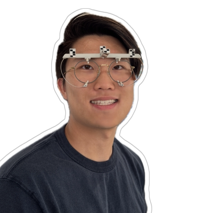
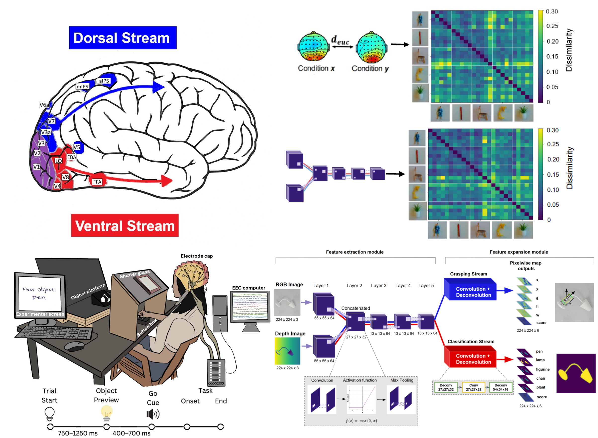
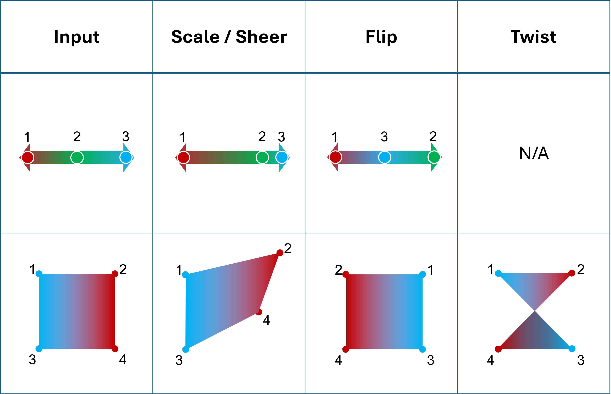
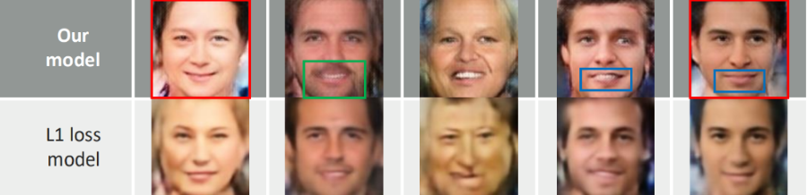
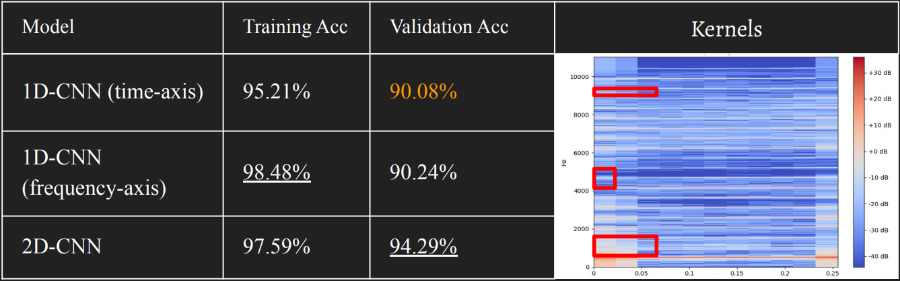
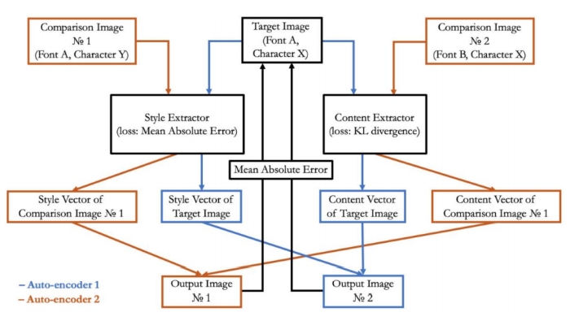
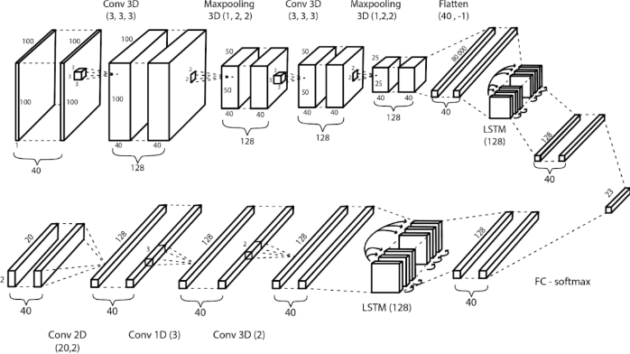

|
Steven Luo I'm a PhD student in Computer Science at NYU advised by Mengye Ren and Pratyusha Sharma. Since my first endeavour into AI in 2018, I've been advised by some wonderful people -- Mengye Ren at NYU's Agentic Learning AI Lab; Jonathan Binas and Pegah Kamousi at Vivid machines; David Lindell at UofT DGP; HKU EEE's Ngai Wong; Matthias Niemeier at UTSC CoNSens. |
 |
{kind=link}
News
|
BlogsSharing what I learnt. |
|
Reasons to do an AI PhD in 2026
August 28, 2026 | Estimated Reading Time: 12min | 2,204 words
To discover insights about intelligence && To discover capabilities that don’t lie on the scaling axis yet – inherenent intelligence.
|
ResearchMy interests stem from the root vision of replicating human intelligence both as:
An end - to understand what makes human intelligence so unique, if unique at all.
Some key capabilities that I hope to see in future AI are: continual learning, long-horizon memory, and goal-derived agentic behavior. Currently, I'm interested in advancing in-context learning. Previously, I worked on topics in computer vision and neural fields. |
|
 |
From Tasks to Topology: Dorsal and Ventral Streams Emerge in Optimized Neural Networks
Tahsin Reza, Ewan Jordan, STS Luo, Kirtan Patel, Jessica Tang, Matthias Niemeier bioRxiv, 2025 bioRxiv
"Task optimization alone can explain the emergence of the dorsal-ventral stream organization."
|

|
Nonparametric Teaching of Implicit Neural Representations
Zhang, Chen* STS Luo*, Jason Chun Lok Li, Yik Chung Wu, Ngai Wong ICML, 2024 project page / code / arXiv We showed that teaching an overparameterized MLP is consistent with teaching a nonparametric learner and proposed a sampling method that improves training time of neural fields by 30+%. |

|
ASMR: Activation-Sharing Multi-Resolution Coordinate Networks for Efficient Inference
STS Luo*, Jason Chun Lok Li*, Le Xu, Ngai Wong ICLR, 2024 code / arXiv An alternative neural field architecture with near O(1) inference complexity irrespective of the number of layers. This reduces the MAC of a vanilla SIREN model by up to 500x while achieving superior reconstruction quality. |

|
Task-Agnostic Approach to Modeling the Ventral and Dorsal Stream
STS Luo*, Tahsin Rehza*, Matthias Niemeier MAIN, 2022 poster Demonstrated that differences in learnt representations for classification tasks (i.e. analogous to ventral stream) and grasping tasks (i.e. analogous to dorsal strema) are driven by task requirements instead of inherited from architectural differences. |
ProjectsSome less rigorous stuff I did but are still quite fun. |
|
 |
On the Effectiveness of Grid-based Neural Fields
STS Luo, David Lindell Arxiv, 2024 arXiv A conjecture on the effectiveness of grid-based neural fields such as NGLOD, Instant-NGP, and DINER. |
|
 |
Novel Eye-to-face Synthesis with Standard Deviation Loss
Rex Tse*, STS Luo*, Peter Ng, Ronnie Jok Sensetime IAIF 2, 2020 paper A model that synthesizes a face from a single eye image. My first time coming up with a new loss function. |
|
 |
Real-time Singing Voice Vocal Register Classification
STS Luo, Justin Lam, Angel Au Sensetime IAIF 2, 2020 paper A vocal register classification model for real-time singing voice classification. My first time working with audio data. |
|
 |
Novel Font Style Transfer Across Multiple Languages with Double KL-Divergence Loss
Chan Lap Yan Lennon*, STS Luo* , Kong Chi Yui, Cheng Shing Chi Justin Sensetime IAIF 2, 2020 paper Font style transfer across multiple languages. My first time working with image style transfer. |
|
 |
Cantonese Lip Reading
STS Luo, Woody Lam, Julian Chu, Samuel Yau Sensetime IAIF 1, 2019 paper Created a lip reading model. My first time creating a new architecture: a pretty cool siamese model that combines CNN and LSTM. |
|
Last updated: 02-Sep-2026
Website design credits to Jon Barron
|